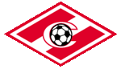

| Мой Спартак или Даешь пряники! |
|---|
Меня всегда интересовал вопрос, почему люди болеют за разные футбольные команды? Если в  городе всего одна команда, то тут нет вариантов - болеешь именно за нее. А если совсем нет? А если несколько? Неужели - по принципу "потому что все пацаны нашего двора - фанаты ЦСКА"?
И я решил вспомнить и разобраться, с чего же для меня, не москвича, началось боление за мою любимую команду - за московский Спартак. И почему продолжается по сей день.
| 1.Как это начиналось |
|---|
Ранняя весна 1981 года, я учусь в школе. У нас первый цветной телевизор "Горизонт". Неожиданное открытие - по цветному телевизору ярко-зеленый футбол смотрится куда эффектней более динамичного, но блекло-серого хоккея. Кубок Чемпионов, четвертьфинал. Наша команда в ярко-красных майках с белой поперечной полосой принимает продольно- полосатых испанцев - мадридский Реал. "Нужно побеждать, впереди ответный матч",- поясняет папа.-"Но врядли получится, испанцы посильней". И верно. Красно-белые играют очень красиво, постоянно комбинируя, пытаясь вывести на удар быстроногого юношу - Сережу Родионова. "Хотя бы один гол, хотя бы с пенальти". Тщетно. Во втором тайме испанцы остро контратакуют, звучат новые фамилии - Романцев, Мирзоян... и, конечно же, Дасаев. Именно этот долговязый тощий парень раз за разом спасает ворота, доставая невероятнейшие мячи - из девятки, после выходов один на один. В конце матча - дальний, метров с тридцати удар Манучара Мачаидзе под планку, испанский вратарь дотягивается и отбивает. Все, ничья 0-0.
Ответный матч я не видел, детям по ночам полагается спать :-) Спартак проиграл 0-2. "Тренер Бошков победил тренера Бескова",-писали иностранные газеты. Так я узнал еще одну фамилию - фамилию тренера команды, игра которой мне так понравилась.
Кстати, этот сдвоеный результат 0-0 0-2 будет еще долго, год за годом, преследовать Спартак в европейских матчах с другими командами.
Тот сезон принес большую победу тбилисскому Динамо в Кубке Кубков. "Значит, Динамо сильней Спартака?"- спросил я папу. Ответ дал матч Динамо(Тб)-Спартак (М) через неделю после выигрыша грузинской командой престижного кубка. Спартак атаковал очень ярко и остро и заслуженно победил 3-1. Именно тогда я в первый раз понял, что все в футболе относительно. И что пряники не всегда достаются всем, кто этого действительно заслуживает. По большому счету, за последние двадцать лет Спартаку пряники доставались очень редко...
Этим же летом я увидел еще немало эффектных матчей в исполнении красно-белых, узнал много новых фамилий - Гаврилов, Черенков, Морозов, Шавло... В стране было еще немало сильных команд, но игру они демонстрировали более скучную и однообразную. Особенно тоскливо было наблюдать за "флагманом советского футбола" - Динамо (К). В том сезоне выиграть у них было практически невозможно, но результат почти всех встреч с участием украинской команды можно было предугадать заранее: 0-1 в Киеве и 0-0 в любом другом городе. Это называлось "выездная модель тренера Лобановского". Только вот в международных матчах эта "модель" работала слабо -- Астон Вилла, Гамбург и другие гранды европейского футбола регулярно обыгрывали академично-натужных киевлян.
Зато Спартак продолжал радовать изящной бескомпромиссной игрой. Забивали по три- пять мячей за игру, правда и пропускали многовато. Но прощалось им все за искрометные прорывы Родионова, изящные "стенки" Черенкова, снайперские выстрелы Гесса... А также за фантастическую интуицию Гаврилова, когда он добивал в ворота практически все мячи, отскочившие от штанги, неудачно отбитые вратарем, неточно пущенные в сторону ворот другим игроками. Осенью - новая яркая победа: проигрывая дома 0-2 лондонскому Арсеналу, вырвали победу 3-2; а в ответном матче, в Англии, в острокомбинационном стиле разорвали "канониров" 5-2.
В те годы футбол транслировали часто и много. Тур длился два дня, например суббота- воскресенье, и иногда показывали по три матча в неделю. Плюс, конечно, еврокубки, причем обязательно все матчи с участием наших команд. ("Отвлекали народ телезрелищами"- объяснил мне недавно один особо умный товарищ. Дык, а сейчас? В гробу я видал всю эту Санту- Барбару -пополам- с- лейтенантом- Коломбо- имени- Бориса- Николаевича- Зюганова!)
Так вот, выделял среди других и следил с удовольствием я только за красно-белыми. А поражения огорчали невероятно. Финал Кубка, ростовский СКА, дальний удар С.Андреева, ставший фатальным. Безжалостные киевские тиски и хлесткий выстрел Буряка со штрафного. Бесплодные атаки на ворота испанской Валенсии, обидные промахи Калашникова и две роковых ошибки Дасаева в ответном матче...
А уж как радовали победы, особенно если они были добыты в яркой борьбе!
Август 1982 года, я с родителями в Москве, папа ведет меня в Лужу на Спартак-Динамо(К). Огромная чаша стадиона, 60 тысяч болельщиков, сочно-зеленая прямоугольная поляна, повторы острых моментов на световом табло. И два гола Хлуса (или Евтушенко?) в ворота Дасаева. Спартак отквитал только один (кажется, Калашников).
Пряник опять достался не тому, кому полагалась. Пожалуй, именно в этот момент я и определил для себя: Спартак "играет в футбол", остальные "делают результат". Это мнение сохранилось у меня, в общем, до сегодняшнего дня.
| 2. Другие команды |
|---|
Неужели в 80-е годы не было других команд, за которые стоило бы болеть? Конечно были!
Например, тбилисское Динамо 1980-1982 гг. Не слишком быстрая, но очень умная и изящная команда. Потрясающая индивидуальная техника игроков. Прекрасное коллективное взаимопонимание. Напористый Рамаз Шенгелия, боевитый Виталий Дараселия, мудрый Давид Кипиани, хладнокоровный Александр Чивадзе и опытнейший Отар Габелия в воротах. Команда играла в интеллектуальный футбол, демонстрируя и пропагандируя лучшие качества грузинского народа. Казалось, на поле выходили не небритые "кацо" в "аэродромах" и с ящиками урюка, но гордые горские князья, интеллигенты до мозга костей. Да так оно и было! Например, Давид Кипиани прекрасно говорил на четырех языках. И, главное, этот футбол шел в изящнейшем обрамлении комментариев великого Котэ Махарадзе. До сих пор в ушах звучит: "И Сулаквелидзе упускает рИИИальнейший мАмент...", "...в Неаполе нА поле Наполи тбилиское Динамо играет с Наполи..." Но пир грузинского футбола продолжался недолго. Разбился Дараселия, сломал ногу и ушел из футбола Кипиани. И команда, вернее командная игра рассыпалась...
Или вот чемпионы 1982 года - минчане. Эдуард Малофеев с его концепцией "искреннего футбола". По большому счету - ничего особенного: сыгранный коллектив плюс тактика сверхбыстрого перехода к контратакам. Но тогда это казалось откровением. К концу чемпионата вдруг оказалось, что Динамо (Мн) впереди всех по очкам. Решающий матч - со Спартаком, в Москве, в "олимпийском сарае". Если побеждает Минск, то впервые за несколько последних лет киевляне оказываются лишь вторыми. А Спартак... вторые или третьи - какая, блин, разница. Я неплохо помню тот матч. Обе команды повеселили публику, забили по многу мячей, да и результат в общем-то удовлетворил всех. Минск победил 4-3 и стал чемпионом, ну и молодцы. Кстати, концепция "искреннего футбола" в дальнейшем оказалась не слишком убедительной. Сборная под руководством Малофеева атаковала быстро, забивала много, но пропускала гораздо больше. Но об этом позже...
Днепропетровский Днепр. Молодая честолюбивая команда, все рослые, быстроногие, постоянно двигаются, почти все прекрасно бьют издалека. Одним словом - советский Аякс. В 1983 году они вырвали золото у Спартака в предпоследнем туре. Между прочим, тот сезон ретроспективно воспринимается, как лучший за все 80-е годы в исполнении красно-белых... но победил Днепр. Заслуженно? Не уверен. Спартак осенью был измотан тяжелыми (но успешными!) международными матчами, первым из советских клубов преодалел смертельный рубеж 1/8 Кубка УЕФА и вышел в четвертьфинал. А в том матче, в Днепропетровске Спартаку нужна была только победа, только в этом случае сохранялись шансы на переигровку. И Спартак сражался. Через три дня после тяжелейшей битвы с Астон Виллой, проигрывая в первом тайме на Днепропетровском стадионе 0-2, невероятным усилием воли сравняли счет... но не выдержали темпа, к концу матча встали и пропустили еще два мяча.
Лучше бы Днепр стал чемпионом в следующем году! Сейчас, спустя 15 лет, чемпионат 1984 года воспринимается как самый странный и нелогичный. Спартак растерял кураж и много игроков; Днепр, испугавшийся своей прошлогодней дерзости, играл робко; Динамо (К) оставленный Лобановским ради сборной (и напрасно!) выглядел вообще никаким. Короче, золото взял ленинградский Зенит - удивительно серый и безликий "чемпион", вырывавший победы за счет морально-волевых усилий, но никак не за счет хорошей игры. Конечно, два гола-близнеца Желудкова со штрафных в левый от Дасаева нижний уголок - были свидетельством наличия в команде игроков более-менее высокого уровня , но в общем и целом... действительно, лучше бы золото взял все-таки Днепр. Не так обидно было бы.
Хочется отметить еще донецкий Шахтер. Не слишком успешно играли в чемпионате, но как собирались к кубковым матчам! Очень дружная и волевая команда с юрким Грачевым впереди. Несколько ярких побед в междунардных матчах на Кубок Кубков были полностью заслужены этой очень симпатичной командой. Среди нынешних российских команд дончан очень напоминает московский Локо 1996-97 годов.
И, наконец, вильнюсский Жальгирис. Очень самобытная команда! Не имея впереди практически ни одного мало-мальски хорошего форварда, обескураживали соперника удивительно спокойной и хладнокровной игрой в обороне. Казалось, все атаки соперника увязали в полужидком бетоне. При всем при этом игра Жальгириса не выглядела "убиванием футбола" (как это практиковали киевляне), но напоминала очень четкую и логичную медленно развивающуюся шахматную партию после какого-нибудь закрытого дебюта. Помню пару матчей, в которых Спартаку пришлось взламывать этот бетон. В первом случае лишь вышедший за 5 минут до финального свистка Родионов четким дальним ударом все-таки обманул вратаря литовцев. А в другом матче впервые в ворота Спартака встал Стас Черчесов. Видимо, коленки у него дрожали, и он пропустил практически все, что летело в сторону ворот : 1-5. Дасаев был травмирован, и в следующих матчах в ворота встал уже 18-летний Пчельников, и неплохо продержался несколько туров, до возвращения "хозяина ворот". А Стас надолго сел в запас. Хорошо, что не навсегда!
Как бы я хотел, чтобы самарские Крылья Советов были бы похожи на Жальгирис!
Да, были хорошие команды в нашем чемпионате! И международные успехи тоже были. А вот что касается роли Спартака и спартаковских игроков в международных матчах - это вопрос особый.
| 3. Международные матчи |
|---|
Так уж получилось, что в 80-е годы Спартак занимал в чемпионате преимущественно 2-3-4-е места. Вероятно, для завоевания золота не хватало именно умения "делать результат". А два или три чемпионских сезона вспоминаются как трудовые, очень тяжелые и неяркие.
Соответственно, Спартак был среди наших клубов практически постоянным участником Кубка Уефа. Надо отметить, что этот турнир, пожалуй, был и остается самым тяжелым для наших команд.
Во-первых, в "продвинутых" европейских чемпионатах за золото постоянную борьбу ведут три-пять команд, а высший титул достается, понятное дело, только одной. Остальные, подчас ничем не уступающие чемпиону классом и подбором игроков, попадают именно в Кубок Уефа. Слабые в футбольном отношении страны имеют в Кубке Кубков и Кубке Чемпионов своих представителей автоматом, а в Кубке Уефа это право надо заслужить. И дабы продвинуться более-менее далеко, требуется побить не одну команду хорошего европейского уровня, причем подчас сложности начинаются с самой ранней осени.
Во-вторых, в Кубке Уефа просто больше игровых раундов. В результате играть приходится поздней осенью, после конца чемпионата, на мерзлых или грязных полях... Мало кто из наших команд проходил этот смертельный барьер 1/8 финала. И первым был Спартак в 1983 году.
Если вы болельщик хотя бы с небольшим "стажем", вы, вероятно, умеете заранее чувствовать - вот скоро наступит кризис в любимой команде, вот скоро она начнет буксовать... У Спартака такие кризисы обычно приходились на конец сезона. Последние туры доигрывались буквально на зубах, а потом наступала прострация-релаксация... до кубков ли тут? Жуткое дело, когда чувствуешь - не катит; нужно побеждать - а нет ни моральных, н физических сил; мяч в ногах не держится, все удары - в руки кипера или выше ворот, все пасы - в ноги сопернику...
Наученный горьким опытом предыдущих сезонов, я ожидал похожего и в сезоне 1983 года. К тому же весь год играли без травмированного Родионова, с быстрым, но совершенно неспартаковским Резником впереди. И как апофеоз неприятностей: уже в 1/16 финала попали на могучую Астон Виллу.
Первый матч - в Москве, и опасения как будто бы начали оправдываться. Англичане будто бы даже и не напрягаясь, хладнокровно гасили все атаки красно-белых, а вскоре и повели в счете. Невероятными усилиями Спартак выровнял игру и сравнял счет. Но уже к этому моменту перспективы Спартака выглядели незавидными. Пропустили мяч дома - одной ногой над пропастью. В середине второго тайма англичане забивают и второй - с невероятно острого угла вокруг рук Дасаева в дальний угол. Казалось, уже звучат тупые удары молотка, забивающие гвозди в крышку спартаковского гроба. Но в конце матча красно-белые отважились на последний штурм. Володя Сочнов, как нередко получалось у него в этом сезоне, прошел по правому краю, сместился в штрафную и... упал через ногу английского защитника. Пенальти на последней минуте матча. Гаврилов подходит на трясущихся ногах, разбегается и... забивает! 2-2 и похороны откладываются на две недели.
А в том, что они все-таки состоятся, мало кто сомневался. Англичане обещали усилить игру, и вернуть в состав центрфорварда Уифа, который забивал головой практически в каждом матче. А у Спартака запарка, надо держаться в чемпионате за быстроногим Днепром и отпускать ключевых игроков в бездарно игравшую в том сезоне сборную Лобановского.
Матч на Villa Park начался так, что впору было выключать телевизор. Картинка отвратительная, туман, единственная телекамера где-то на верхотуре. И буквально на первой минуте угловой в нашу штрафную, Уиф опережает оробевшего Дасаева и вколачивает мяч в сетку. Головой, естественно. "0-3... нет 0-4 обеспечено",- обреченно подумал я, но продолжал смотреть из чистого любопытства.
А дальше начались чудеса. Наши ни в чем не уступали англичанам. Похоже, те решили, что дело сделано, расслабились, отдали инициативу. И напрасно. Спартак уже в первом тайме мог не только сравнять счет, но и забить еще пару мячей. Но не повезло. Фортуна, вообще, капризная барышня. В том матче она кокетничала со Спартаком, то строила глазки, то отворачивалась. Ближе к середине второго тайма Черенков уловил момент, когда Фортуна в очередной раз "показала личико", разыграл с партнерами четкую типично спартаковскую стеночку и сквитал счет. После этого на поле осталась практически только одна команда. Англичане всем составом прижались к воротам, защищая скользкое 1-1. Время шло, наши отчаянно атаковали, но мяч не шел в ворота. Ну что ж, ничья с таким сильным противником на его поле - тоже хорошо... И вдруг! На предпоследней минуте Бубнов бьет метров с двадцати над левым углом, английский вратарь не торпясь ставит мяч на ленточку, выбивает в поле... наши перехватывают! Черенков проходит по левому краю! ...проникает в штрафную! ...смещается в центр! ...бьет, бьет по-Тихоновски, неожиданно, резко и в ближний угол! ...под удар бросается защитник, но мяч отскакивает от его плеча и влетает в дальний угол!!!
Мы с Озеровым кричали слово "гооол!" до самого финального свистка! Ни до, ни после я не слышал больше такого вопля, разве что в исполнении латиноамериканских комментаторов. Но для них это ежедневная рутина, они этот вопль долго репетируют и деньги за него получают. А вот в исполнении Ник. Ник. Озерова... впрочем, аксакалы говорят, что и раньше изредка бывало ;-)
После такой блестящей победы просто обидно было бы, если бы Спартак в очередной раз традиционно лажанулся бы в 1/8 финала. Поэтому ноябрьский раунд Кубка Уефа ожидался с боязливым нетерпением. Я сейчас уже не помню, кто нам достался. Какие-то голландцы, причем, не из самых сильных. Но матчи все равно вышли очень тяжелыми. В гостях долго защищались, потом Гаврилов в своем стиле все-таки закатил в ворота отскочивший к нему в результате кучи-малы мячик. Времени до конца матча оставалось мало, и голландцы сумели только отквитаться. В ответном матче ситуация складывалась похожая - голландцы ринулись вперед, и не раз и не два сердце замирало в предчуствии непоправимого. Забей голландцы первыми, и шансы Спартака оказались бы минимальными. Но наши выстояли, а ближе к концу матча уставшие голландцы зевнули пару контратак, и счет 2-0 открыл красно-белым дорогу в четвертьфинал.
Да, забыл упомянуть, что этот матч я смотрел гриппуя, с температурой +38.6С. После победы любимой команды здоровье резко пошло на поправку.
Так Спартак впервые в истории нашего футбола вышел в четвертьфинал Кубка УЕФА. Если в других кубках все рекорды и приоритеты принадлежат другим командам, то король Кубка УЕФА - московский Спартак. В копилку рекордов надо внести еще полуфинал того же кубка в сезоне 1997/98 гг. Москва-Воронеж - хрен догонишь! ;-)
В четвертьфинале Спартака ждал опытный и агрессивный Андерлехт. К весне выздоровел Родионов, но зато в плохой форме к матчам подошли Гаврилов(это у него весной бывало регулярно) и Черенков (зимой ходили какие-то смутные слухи насчет нервного заболевания, подробностей до сих пор не знаю). Первый матч в гостях, наши уже в начале матча открыли счет (вроде бы Родионов), но невооруженным глазом было видно, что бельгийцы во всех эпизодах побыстрей и побоевитей. Особенно много проблем нашей защите доставил Чернятински. В конце 1-го тайма он прорвался один-на-один, перебросил мяч через Дасаева, и из пустых ворот наш защитник выбил мяч руками - пенальти. После перерыва Андерлехт усилил давление и сравнительно легко довел счет до 3-1. Потом бельгийцы подустали, принялись доигрывать матч, и за несколько минут до конца хладнокровный Гладилин сократил счет до минимума. И тут... тут в ход игры вмешался судья, до сих пор помню его поганую фамилию - Бергамо. Бельгийцы начали навал, навесили в штрафную, кто-то из наших совершенно спокойно и четко вынес мяч головой... судила свистнул и дал второй пенальти за игру рукой. Похоже, сами бельгийцы не ожидали такого поворота событий - за мяч никто из них не боролся, и все прекрасно видели, что защитник играл по правилам... Но подарком судилы с радостью воспользовались: 4-2.
Ответный матч прошел в бесплодных атаках Спартака. Андерлехт выстроил глубокоэшелонированную оборону и на нашу половину поля практически не выходил. Первый тайм прошел... половина втрого... и вдруг во время одной из не особо опасных атак нашего игрока сбивают в чужой штрафной. К одиннадцатиметровой отметке подходит Гаврилов... опять на трясущихся ногах... увы, два раза подряд Фортуна улыбается редко. Гаврилов пробил прямо в руки вратарю. Кто знает, как повернулся бы матч, забей Гаврилов такой важный пенальти?! Наши продолжали атаковать, но как-то обреченно. И лишь в самом конце матча, на последней минуте, бельгийцы упустили Родионова, тот вышел на выгодную позицию и с линии штрафной точно пробил низом. 1-0, но в полуфинал вышел Андерлехт.
У Спартака было немало красивых и важных побед над зарубежными клубами. Но почему-то отчетливей всего помнятся поражения, а среди побед - только самые нервные или необычные. Например, помню игры с каким-то занюханным Люцерном, когда в течение 179 минут наши не могли распечатать ворота швейцарцев, и лишь на последней минуте ответного матча Кужлев умудрился головой переправить мячик в ворота. Или 1-3 5-2 с Тулузой. Французы в Москве оказались совсем никакой командой, но чего ради Спартак пропустил 3 мяча в первом матче?
Зато фатальные поражения горят в моей памяти незаживающим язвами.
Два раза нас обламывал Кельн, и обе встречи проходили по одному сценарию. Первые матчи в Москве немцы защищались всей командой, а в ответных матчах быстро бегая и напористо атакуя, заставляли нашу защиту допускать совсем необязательные ошибки. 0-0, 0-2 и 1-0, 1-3. Примерно так же мы уступали Севилье (0-0,0-2) и Тиролю (1-0,0-2). Именно эту печальную закономерность во встречах с равным и даже более слабым соперником я подметил и всегда с ужасом ждал ноябрьских туров Кубка УЕФА. И, как правило, мои опасения оправдывались... Ну не любил Спартак, когда с ним общались по принципу: "сам играть не умею, но и тебе не дам!"
Уступали и заведомо гораздо более сильному сопернику, когда нас переигрывали спокойно и закономерно. Например, выбивали нас Нант (0-1,1-1) и Стяуа (0-3,1-2). Но как раз в этих матчах мы выглядели в общем достойно.
Особняком стоит кошмар осени 1987 года. Да-да, я имею в виду две встречи с Вердером. До сих пор прямо мороз по коже и слезы на глазах.
Могли ли не проиграть? Могли, и даже обязаны были! Первый матч дома, но не в Москве, а в Тбилиси. Грузины болели достаточно искренне, но, похоже, кроме "динамо", других слов по русски не знали. Под громовой рев трибун наши бросились вперед и... начали забивать, да как! Гол за голом влетал в ворота немцев, один красивее другого! Я, признаться, ожидал обычного для встреч с немцами сценария (см. выше), но этот матч опроверг все прогнозы. Максимум, чего смог добиться Вердер - это отквитать один мяч (4-1).
И, вероятно, перед ответным матчем наши посчитали, что победа в кармане. И не сумели настроиться на игру должным образом. "Нас устроит только победа",- заявил кто-то из наших игроков на предматчевой пресс-конференции. На вражеской территории? Малой кровью? Похоже, немцы решили устроить нам в тот вечер второй блицкриг, и это им удалось. Нельзя сказать, что наши играли совсем уж плохо. И два забитых мяча были весьма красивы. Но все это меркнет перед окогчательным результатом, которого добились игроки Вердера: 6-2. Нашу защиту просто порвали и смяли.
Рецидив недооценки соперника произошел пять лет спустя в матче с Антверпеном (1-0,1-3), правда и судила приложил свои грязные руки. Тем не менее, анализируюя все эти яркие победы и обидные поражения приходится признать - Спартак 80-х был командой настроения.
Кстати, а разве это так уж плохо? Именно это качество в числе прочих и привлекало меня в Спартаке. И отсутствие оного отталкивало (и продолжает отталкивать) в Динамо (Киев).
| 4. Спартак и Динамо (Киев) |
|---|
Может быть, я болел бы за какую-нибудь другую команду, не за Спартак... если бы не было такой команды - Динамо (Киев).
Действительно, почти все наиболее яркие и эффектные достижения советского футбола в 70-80-х годах были связаны с именем В.В.Лобановского и командой Динамо (Киев). Кубок Кубков в 1975 и 1986 гг., Суперкубок в 1976 г. - это их заслуга. Серебро на Чемпионате Европы 1988 г. - это тоже Лобановский и Динамо (плюс Дасаев и минчанин Алейников).
С другой стороны - оглушающие провалы в отборочном турнире сборной на ЧЕ-76 и ЧЕ-84, "странный" ЧМ-86, блеклый и невыразительный ЧМ-90. Ну и, конечно же, регулярные фиаско в еврокубках 80-х годов (исключая 86-й год). За это тоже следует "поблагодарить" Валерия Васильевича и его команду.
Так в чем же дело, что это за команда такая - Динамо (Киев)? Попробуем разобраться. Надо иметь в виду, что во все времена (и 10 лет назад, и 20, и 30...) это был флагман не столько советского, сколько украинского футбола. Основное назначение команды было - существовать и играть в пику "клятiм москалям". Впрочем, это касается не только Киева, но и Минска, и Тбилиси, и Еревана... Такова уж была идеологическая модель советского футбола в 70-80-х годах.
Вся разница состояла в том, что большинство республик в силу экономических причин не могли содежать хорошую команду в течение нескольких лет, а Украина - могла. И вся пирамида украинских команд работала на одну цель - на победы Динамо (Киев). Тут и отказ от борьбы во встречах с "главной командой республики", и финансовая дискриминация "второстепенных" команд, и безропотная поставка в ее состав лучших игровых ресурсов (вспомните хотя бы совершенно необъяснимый одновременный переезд Протасова и Литовченко из Днепропетровска в Киев)!
Другой составляющей этой модели были московские команды, спонсируемые и поддерживаемые министерствами, ведомствами и организациями: Всемогущей Советской Армией, хитроумной Советской Милицией, богатым Советским Машиностроением и нищеватыми Советскими Путями Сообщения. А также разношерстными Профсоюзами. Внутри Кольцевой дороги кипела своя футбольная жизнь, мало обращавшая внимание на провинцию. Здесь все были примерно равны по силам меж собой, и в ходу были несколько другие ценности. Если для Киева уже в те времена футбол был политикой, то для Москвы все еще оставался игрой.
Таким образом, идеологическая модель советского футбола подразумевала в-общем два полюса, две игровые философии: абстрактная "игра ради игры" и предельно конкретная "победа любой ценой". Самыми яркими представителем первого подхода был Спартак (Москва), а второго подхода - Динамо (Киев). Привыкший "красиво обыгрывать", Спартак мог одной левой раскатать сильного соперника и в то же время слить более слабому и неинтересному. Динамо (К) было "заточено" под эффективное "ломание" отечественных соперников, прежде всего московских, с минимальной затратой сил.
Впрочем, Спартак всегда стоял чуть-чуть в стороне от загнивающего столичного футбольного болота, именно в силу того, что не принадлежал какому-то одному крупному ведомству, был гораздо более демократичен. Профсоюзы содержали его финансово, но не идеологически. Может быть, поэтому "эстетизм" Спартака, поставленный и выпестованный тренерским талантом К.И. Бескова, был выше и дальше внутримосковских футбольных интриг и дрязг.
Я не хочу сказать, что это было плохо или хорошо для нашего футбола в целом. Хотя бы потому, что и сейчас российский чемпионат мало отличается от советского по структуре: в лиге играют команды двух типов - московские "аристократы" и провинциальное "быдло". Только если раньше "провинцию" представляли сборные целых республик, то теперь - команды отдельных городов. И существовать провинциальным командам гораздо сложней, чем 15 лет назад тому же киевскому Динамо или ереванскому Арарату. Проявляется это во всем - в нехватке финансов, в нежелании хороших игроков и тренеров выступать вдалеке от столичного комфорта, в необъективности судейства и даже... в "утоплении" периферийных команд приглашенными московскими тренерами ( конечно, я в первую очередь намекаю на вояж Тарханова в самарские "КС", хотя и имею в виду не столько откровенный тренерский саботаж, но просто легковесное, несерьезное отношение их к своим обязанностям, отношение типа "кратковременный выезд на периферию за бабками").
Но вернемся к Динамо (К). Идеологические цели, поставленные перед этой командой, требовали иного подхода к игре, чем подходы, практиковавшиеся московскими командами. На Украине были неплохие погодные условия,хорошие поля и рвущиеся в бой игроки. Отсюда и выросла игровая концепция В.В. Лобановского: опора не на разум, но на силу; не на точность, но на скорость; не на красоту, но на результат.
Представьте себе двух боксеров. Один - игровик. Он порхает по рингу, уворачивается от ударов, и наносит свои редко, но точно. И второй - силовик. Он агрессивен, он тренирован только на то, чтобы нанести в направлении соперника максимум ударов в минимальный отрезок времени, смять и порвать его. Если соперник тоже неробкого десятка, то вполне приемлимо уходить в пассивную защиту, клинчевать, висеть у него на руках... Во встрече первого и второго чаще побеждает второй, у которого работает не голова, но рефлексы и мышцы. Ведь это гораздо проще и эффективней!
Я не считаю, что Динамо (К) играло в оборонительный футбол, отнюдь! Скучно обороняться всей командой их заставляли сильные соперники, прежде всего Спартак. Но из этой оборонительной прозы киевляне почти всегда умели извлечь максимум выгоды, а их соперники из поэзии атаки - нет. Поэтому я бы определил многодесятилетний стиль Динамо (К) как примитивно-прагматичный.
Конечно, смешно ставить в заслугу В.В. Лобановскому "изобретение" этого принципа. Но он, пожалуй, первым в мире развил его до абсолюта, убрал все, по его мнению, "лишние наслоения" и выпятил, усилил базовые положения. Главным было то, что под соответствующую игровую концепцию гораздо легче было подобрать состав футболистов. Теоретически, годились любые - с любым уровнем техники и тактики; главное, чтобы хватало физических сил и прилежания. Неплохие мастера все-таки были предпочтительней. Именно в те редкие годы, когда Лобановскому удавалось рекрутировать в команду хороших игроков, были результаты. Но не благодаря игровой концеции Лобановского, а вопреки ей. Ибо концепция вульгарно понятого тотального футбола, концепция игровых "винтиков" не может приводить ни к чему, кроме как к итоговому нивелированию мастерства игроков, что в Динамо (К) регулярно и случалось буквально через несколько месяцев после эффектных побед.
Лобановский - великий тренер с точки зрения того - как он работает и реализует свои идеи. Но он одновременно и великий злодей с точки зрения того - что он делает, а он-то как раз планомерно на протяжении десятилетий убивает в футболе романтику и воздвигает на пьедестал прагматизм.
Но, конечно, такой подход все таки приносил плоды. Против команд СССР - почти всегда. Против иностранных - иногда, особенно когда московские футбольные чиновники шли на поклон к киевским со смиренной просьбой "выручить" и обещанием решить любые финансовые, административные и даже моральные проблемы. И не только обещали, но и решали. Печальный юмор этой ситуации заключался в том, что Киев воспринимал ее как плевок в морду "клятiм москалям" и радостно потирал ручонки, а Москва - как очередную взаимовыгодную комбинацию (после того, как утерлись). Короче, когда Динамо собирало под свои знамена всех лучших игроков, до кого могло дотянуться, результат был - быстрый, яркий и... кратковременный.
Я не хочу, чтобы меня считали ярым националистом или украинофобом. Я с огромной симпатией относился и отношусь, например, к днепропетровскому Днепру или к донецкому Шахтеру. Но любой человек, хотя бы чуть-чуть знакомый с идеологией отношений Украина-Россия, признает, что в моих предыдущих абзацах, к сожалению, слишком много правды.
Но забудем о политике и вспомним, что футбол - все-таки игра. И скажем спасибо Спартаку за то, что даже несмотря на такое огромное идеологическое и финансовое превосходство киевлян, красно-белые умели противопоставить им свое понимание игры, дикому напору - коллективную игру, прессингу - мелкий точный пас, четкому исполнению тренерской программы - мысль и импровизацию. За 80-е годы счет личных встреч Спартак-Динамо был примерно равным, но бело-голубые обычно "пересопливливали" красно-белых, а вот те их частенько буквально громили.
Вспоминается весна 1989 г. Мы в Волгограде, в студенческой командировке, бегаем по этажам гостиницы "Молодежная" в поисках работающего телевизора. В закутке бормочет черно-белый ящик, на табуретке подпрыгивает слаботрезвый мужик: "$%^&! Наши проигрывают!" "Нашими" он, волгоградец, называл киевлян. В тот вечер Спартак изящно раскатал в гостях украинскую команду с разницей в 3 мяча!
Да, есть люди, которым игра киевлян импонирует. Давить, ломать сопеника, крушить ему челюсти и ребра, упиваться собственным превосходством в грубой силе... И закрываться, висеть на сопернике, кусать его за нос - если он вдруг этому дикому напору не поддается. Оглянитесь, разве таких вокруг мало? Лично я, если знаю о человеке, что он поклонник киевского Динамо, уже примерно представляю себе его не слишком симпатичный психологический портрет.
Правда сейчас, когда за ту или иную команду команду часто болеют по "терроториальному принципу", я остерегся бы однозначно считать всех без исключения поклонников Спартака своими единомышленниками и "единоверцами", а всех поклонников Динамо - драчливыми недоумками. Скорее так: если россиянин болеет за Киев, то это характеризует его не с лучшей стороны; если украинец - за Спартак, то это для меня - свидетельство большой с его стороны смелости и высокого интеллекта. Вот два полюса, а с теми, кто между ними, кто просто "болеет за своих" надо разбираться индивидуально.
Ну а завершились разборки 80-х в 89-м году, в Москве. Помните? - чрезвычайно напряженный матч в предпоследнем туое. Победитель берет золото. И неимоверный гол Шмарова со штрафного за 5 минут до конца матча. - 2-1 ! Этим матчем был подведен итог 80-м годам. Начиналась новая эпоха.
| 5. 90-е годы |
|---|
Не скажу, что мне все сейчас так уж нравится в нынешнем положении и состоянии Спартака.
Спартак сейчас - тоже главная команда страны, со всеми вытекающими издержками. Да, Спартаку предоставляют ресурсы. Да, от Спартака ждут результатов. И не прощают, если эти результаты не всегда оказываются достигнутыми.
Нынешнее положение и состояние Спартака всецело зависит от деятельности О.И. Романцева. Я преклоняюсь перед этим человеком за то, что он взял на себя смелость сохранить спаратаковские традиции и, главное, спартаковскую игру и проклял бы тренера, который начал бы внедрять в Спартаке, например, стиль Динамо (К).
Да, традиции в команде - это главное. Вы можете пригласить самого хитроумного тренера, собрать под его знамена лучших игроков, но команды все равно не получится. Потому что вокруг нет людей-единомышленников, нет болельщиков, нет атмосферы, подталкивающей игроков - как надо играть, а как - нет. Традиции - великая и страшная вещь. Это как колея, из которой крайне тяжело выехать.
Традиции очень трудно изменить, они "выращиваются" десятилетиями - и позитивные, и негативные. Например, у команды Крылья Советов (Самара) - традиции захолустной команды из низшей лиги, которые упрямо прорастают сквозь шелуху приглашенных сильных игроков и московских тренеров.
Не дай бог растерять свои традиции, что происходит мгновенно. Это однажды случилось к московскими Динамо и Торпедо, и вот уже лет 20 теперь от этих команд можно ожидать всего - и медалей, и вылета в низшую лигу. У команд нет своего лица, а есть только текущий игровой состав - более или менее сильный. А вот у ЦСКА, например, традиции сохранились, так что даже несколько тархановских сезонов не сумели разрушить игровой потенциал команды до основания.
Ну а у Спартака, слава Богу, пока стабильные позитивные традиции, определяющие его нынешнюю игру и его нынешние достижения. Но достижений этих не так много, как хотелось бы. Как это не прискорбно, плюшки и пряники опять в основном достаются другим.
Неужели это тупик? Неужели надо брать пример с тех же киевлян? Неужели - да здравствует прагматизм?
Конечно, нет!
И вот тут то мне хочется высказать ряд претензий О.И. Романцеву, годами игнорирующему резервы игрового роста Спартака.
В команде 80-х годов не было игроков, блестяще играющих головой, но практически все могли более-менее грамотно выполнить этот игровой прием и забить гол. В нынешнем Спартаке за последние 10 лет таких игроков не было в принципе. Если никто не умеет играть головой, так, может быть, не стоит по этому поводу разводить руками, а стоит - учить?
В арсенале команды 80-х годов было такое мощное оружие, как дальние удары. Им прекрасно пользовались Гесс, Гладилин, Бубнов, Гаврилов... В нынешнем Спартаке даже попытка пробить издали - редкость. И даже игроки, которые вроде бы умеют сильно и точно бить издали, например Баранов или Ромащенко, в игре за Спартак этим приемом практически не пользуются, а если и пытаются - так кроме хихиканья эти попытки у болельщиков ничего не могут вызвать. А вот в игре за сборную Белорусии у них все получается. Почему? Мне кажется потому, что в Спартаке дальние удары просто не поощряются тренерами. Прискорбно.
В нынешней команде по сравнению со Спартаком Бескова взаимодействие игроков на уровне паса просто великолепно! Олег Иваныч оказался достойным учеником Константина Иваныча и сделал то, что старик изобрел, но на что у него порой не хватало терпения и возможностей. Но и потери в стиле - значительные. Прежде всего в загоне оказалось умение забивать. Если забегания и стеночки сродни ракете-носителю, средству доставки заряда в цель, и причем эта ракета-носитель объективно одна из лучших в Европе, то... то порох в боеголовке частенько просто отсыревает и остается пшик. Завершение атак - самое слабое место нынешнего Спартака. Старое поколение было в этом отношении несколько более умелым. Ширко и Титов - достойные продолжатели игры Родионова и Гаврилова... если это не касается забивания голов. Второе слабое место - оборона. В Спартаке никогда не было защитников мирового класса (правда, был супервратарь - Дасаев), но команда умела обороняться, проводя контратаки. Нынешнее же поколение, кажется, этим оружием не владеет совершенно. :-(
Нынешний Спартак, как и команда 80-х годов, играет практически одним составом. Как следствие - физическая и моральная усталость игроков во время осенних матчей. Фактически, где-то со второй половины октября игровой тонус традиционно идет под гору. Понятно, что раз необходимый компонент игрового стиля - тончайшая сыгранность всех игроков, то наигрываться должен ограниченный состав, но... Но почему этот состав такой узкий? Почему потеря одного-двух ключевых игроков для команды - трагедия? В то время как в запасе гниют без игровой практики весьма неплохие футболисты. На мой взгляд, на проходные игры со всякими Ураланами и Крыльями Советов надо бы почаще выставлять "скамейку" - и резервным игрокам польза, и ключевым отдых. И комаде - большой плюс.
Селекционная политика нынешнего Спартака грешит изъянами. Я всегда был противником приглашения в команду Юрана, даже в 1995 г., когда он сильно помог Спартаку. Все-таки Юран - киевлянин по игре и капризный латиноамериканец - по характеру. У меня вызывает недоумение цепляние за Канищева. Это игрок, не способный воспринять стиль команды ни в целом, ни в частностях. И мне крайне жалко потеряных для Спартака Мамедова и, вероятно, теперь уже Бузникина.
Одним словом, главная моя претензия к Романцеву - что он единолично вершит судьбу Спартака, и на ошибки и недоработки ему некому указать. А представьте себе, что с Романцевым что-нибудь случится? (Тьфу!-Тьфу!-Тьфу!) Боюсь, что для Спартака это будет означать катастрофу. Я за то, чтобы говорили: "Романцев - это Спартак", но против, чтобы считалось: "Спартак - это Ромацев". А пока все к этому идет. Командиру нужен комиссар. У Бескова был великий Н.Н. Старостин. У Романцева нет никого. И, боюсь, будучи по сути единоличным финансовым и организационным хозяином клуба и команды, Романцев никого подобного не потерпит. А жаль.
И еще одно обстоятельство, которое вызывает у меня отторжение и неприятие. Я имею в виду болельщицкое окружение команды. Сейчас за Спартак болеет слишком много случайных людей. Я бы предпочел, чтобы команду ценили и любили за игру, а не за ее статус главного клуба страны. Поэтому меня воротит от высказываний типа: долой Романцева и забегания-стеночки, да здравствует какой-нибудь жлобский стиль, если он приносит успех. Господа! Если Вы так считаете, то идите лучше болеть за конину или мусорню. Вы и Спартак - две большие разницы.
Но как бы то ни было, пока дела идут не слишком плохо. (Тук-тук по дереву!) Есть победы, случаются поражения. Причем, как ни обидно - в основном не от тех, кто играет в футбол, а от тех - кто в него работает или даже воюет. Что-то в нашей жизни (в том числе и футбольной) не так, если торжествует напористая серость. А так не должно быть.
Хочется пожелать Романцеву расширить свой тренерский кругозор. Хочется пожелать команде усилить игру. Хочется пожелать клубу поменьше потерь игроков, уезжающих за рубеж с целью протирания трусов на скамейках запасных. И, главное, мы ждем от Спартака только побед. Как, например, насчет того, чтобы хотя бы разик завоевать главный приз Лиги Чемпионов или Кубка УЕФА? Мы так истосковались по сладкому! Даешь в конце концов пряники!!!
| Грустноватое продолжение-1999 |
|---|
Я пишу эти строки в очень непростой для Спартака момент. Осенняя "компания" 1999 г. с треском провалена. Причем провалена именно в тот сезон, когда мы все (и я в том числе) не без оснований считали, что Спартак выглядит посильнее, чем в предыдущие годы, что настало, наконец, время для решающих побед.
Но не тут-то было - Спартак разбит и посрамлен. А Киев, тоскливо вымучивая голы и очки, все-таки продвигается вперед, и, кажется, что ничто на свете не может остановить это тусклое и вялое, но настойчивое движение. Злопыхатели дружно сняли штаны и звонко аплодируют себе по задницам. Звучат требования - отстранить Романцева, и разогнать команду, и звучат прежде всего от тех, кто абсолютно не может предложить ничего конструктивного.
Причины неудач будут еще анализироваться. Будут приниматься меры. Но я молюсь, чтобы Спартак остался Спартаком. Чтобы Романцев признал и исправил свои ошибки, а не повторял их из года в год.
И чтобы хотя бы раз праздник случился на нашей улице. Ведь мы его за 20 лет все-таки заслужили?
| Грустное заключение - 2003 |
|---|
Ну вот и все? Чуда не произошло? Видимо, да. И пряники, опять будут жрать другие. По крайней мере, предпосылки для этого есть. В любой момент какой-нибудь олигарх Мойша Рабинович может купить какой-нибудь "Заборостроитель" из города Пердяевск, накачать в него миллиарды нефтерублей и выиграть с первой же попытки медали чемпионата, еврокубки, etc. И жители города Пердяевска, прыгая через глинистые лужи вокруг заброшенного стадиона, до конца жизни будут гордиться, что на самом деле это они - ПЕРВЫЕ и ЛУЧШИЕ. Потому что морды ихние Рабиновичу однажды понравились.
Ну ладно, это лирика. А факты таковы, что, кажется, эпоха Спартака закончилась. Романцев не сумел выкарабкаться из под груза своих мелких, но многочисленных ошибок. Несколько лет он дергался, ощущая, что коренного усиления игры не происходит, что надо что-то менять, выгонял со скандалами старых проверенных (но помаленьку теряющих силы и удачу) игроков, закупал и тут же отправлял дочерна полировать скамейки своими задницами каких-то негров, запутался в финансовых вопросах, прикормил немало жуликов и, наконец, позволил им распоряжаться Спартаком. И, как апофеоз, эти же жулики его из Спартака не слишком вежливо попросили.
Все, что только можно, разрушено, разворовано и пропито. Владеет клубом (вернее, его обломками и гордым брэндом "Спартак") непонятно кто. Фирменный стиль, к злобной радости бездарностей, заклеймен позором и успешно забыт. Тренеры и игроки меняются каждые несколько месяцев. Что может быть хуже? Не знаю. Это тотальный краш, развал, пи$дец. Вшивый бомж, купивший барскую усадьбу на краденные бабки, расколотивший статуи, засравший фарфоровые вазы и топящий печку картинами мастеров итальянского Возрождения, не смог бы нанести большего урона.
Что дальше? Банкротство и самоликвидация клуба? Первая, а потом и вторая лига? Или - еще более страшное: безликость. Вы что же, суки, самые умные? Свой так называемый стиль хотели иметь, свои так называемые традиции? А вот теперь вас мордой да в дерьмо - будьте серыми и тусклыми, как все остальные. Как Динамо и Торпедо. Как, между прочим, и ЦСКА тоже.
Мне пока нечего больше сказать. Я плачу. K
| И еще несколько слов - 2008 |
|---|
Вот и все. Самое страшное случилось. Первым в космосе побывал Гагарин, вторым... э... Герман Титов. А третьего, пятого, сотого и тысячного уже никто не помнит. Теперь о футболе: первым КУЕФА выиграл ЦСКА, вторым Зенит... На скрижалях Истории будут выбиты только эти имена. А Спартак? Зачем весь этот феерический четвертьвековой путь? Зачем триумф над Астон Виллой? Зачем ужас Вердера? Зачем Андерлехт и Реал? Зачем полуфиналы всех трех еврокубков? Все это теперь - в мусорную корзину и забыть навсегда. Торжествуют те, кто все 80-е и 90-е годы обжирался в футбольном тылу, в Первой лиге, и еврокубки смотрел только по телевизору, грызя семечки и попивая пивко. Герои - теперь и навсегда - они.
А Спартак? А Спартак - специалист по поражениям от райвалов. Семь лет без побед над ЦСКА, два раза по 1-4 от Киева. Аленичева и Титова - под зад коленкой. Чтоб духу от Великой Игры не осталось. Славный бренд самими владельцами (всякими там Федунами) используется, как половая тряпка для гостей. Не хотите ли вытереть свои говнодавчики-с? Тряпка-то необычная: красно-белая. Только заплатите денюжку-с... И платят, и вытирают.
Владельцев до ентовой матери, а Хозяина все нет и нет... Ничья команда... Народная...
| Дополнение - 2013 |
|---|
И еще несколько слов. Я вдруг обнаружил, что регулярно (раз в 3-5 лет, примерно) эту страничку кто-то прочитывает, куда-то выкладывает, обсуждает. Знаете, это приятно. :) Правда, выясняется, что при этом обсуждении не учитывается некий контекст, который сам собой разумелся "тогда", но пропал и потерялся "сейчас". Времени-то прошло много. Придется пояснить, что я имел в виду.
Итак, Спартак vs Динамо (К). Я начал "сознательно" следить за футболом где-то осенью 1980 года. Включаешь ТВ, играет команда Динамо (К), тренер Лобановский. Счет 1-0 в ее пользу. Игроки выстроились линеечкой поперек поля. Длинный пас с левой бровки на правую. Никто не двигается вперед. Длинный пас с правой на левую... Третий длинный пас с левой на правую... Пятый пас... Десятый... Двадцатый... Даже ни малейшей попытки атаковать ворота соперника... Тридцатый пас направо... Сороковой справа налево... Свисток арбитра, матч закончен, команда Динамо (К) набрала очередные 2 очка.
Может быть, это один отдельно взятый матч? Да ничего подобного. То же самое в следующем матче... и в следующем... и через сезон. Четыре или пять сезонов подряд, десятки матчей, в которых команда Динамо (К) откровенно убивала время, убивала футбол! И при этом почти регулярно становилась чемпионом страны. (Слава Богу, в международных матчах это не катило. В международных матчах как раз киевлян за наглый и вульгарный прагматизм регулярно очень больно наказывали).
Может быть, не было этого? Может, я вру? Может, у меня галлюцинации, продолжавшиеся годами? Может, не было устоявшегося понятия "выездная модель Лобановского"? Может, не было матча СССР-Польша на ЧМ-82, которым руководил как раз Лобановский? Кто помнит тот матч, тот знает, о чем я говорю. Пятьдесят пасов слева направо, столько же справа налево, тупые 0-0. А Португалия-СССР 0-1 в 1984, топтание посреди болота с провальной мечтой удержать нолики? Случайность, частные случаи? Но ведь и до этого и после были десятки матчей в чемпионате СССР, в которых тренировалось и оттачивалось именно это тупое катание мяча. Кубок Кубков в 1976 и 1986, говорите? Искрометная игра, говорите? Гений Лобановского, говорите? А вот эти 10 лет посередине между 76 и 86 - их что ли не было? (Многие так и уверены: не было. Нагло врут? Заблуждаются? Не знаю.)
А ведь кроме "пас налево - пас направо" был еще "фирменный киевский подкат". Это жестокий подкат сзади ножницами. Тогда, в 80-е годы судьи к нему относились либеральней, чем сейчас. Циркуляр УЕФА/ФИФА с запретом прошел где-то ближе к концу десятилетия, уже на ЧМ-1990 за подобное давали не то что желтую, а подчас и красную. Но в первой половине 1980-х это было разрешено. И активней, чаще всех это прием применяли как раз киевляне. Это был один из базовых приемов. Его тренировали. Его обязаны были выполнять все - и защитники, и форварды. На потенциальную возможность травмы (в том числе, и себе) шли сознательно, к ней готовились - надевали на голени утолщенные щитки. Я еще в 80-х годах удивлялся, почему это киевляне, все как один, такие толстоногие - пьют какой-нибудь допинг? А позже, уже в 1990-х "секрет" разъяснил в одном из своих репортажей (а может и в статье, сейчас уже не помню) Уся Ваткин - мне понравился и запомнился его эпитет "бочконогие киевляне". Как известно, Уся большой поклонник киевлян и Лобановского, врать не стал бы. :)
Были у кивлян и другие базовые приемы, обязательные к использованию всеми. И длинный диагональный пас низом. И проход защитника по бровке, заканчивающийся кроссом в штрафную, который форварды обязаны были уметь завершать "с лета". И "коллективный прессинг", когда на игрока поочередно бросаются с подкатами в момент приема сразу несколько человек. И первая "бешеная" 15-минутка, в течение которой на чужую штрафную перли дуром все 10 игроков, пытаясь забить хотя бы один гол, чтобы потом - ну вы догадались да? - оставшиеся 75 минут: пас налево, пас направо, итог: 1-0, Киев опять чемпион.
Короче говоря, Лобановский всегда ставил своей команде игру "механическую", использующую небольшое количество тщательно натренированных "базовых приемов", в том числе и непопулярных, полузапрещенных (это я про подкат). Он был тем, что сейчас называют "эффективным футбольным менеджером" - добивался максимального эффекта минимальной ценой. Его команда набирала очки в чемпионате СССР всегда - и с хорошими игроками, и с посредственными. (Помните - Лозинский, Балтача, Хапсалис, Журавлев, Олиференко, Юрчишин? Не помните? Ну и не надо. А результат все равно был.) Да, ну и про еврокубки. Как раз в той ситуации, когда Лобановский рекрутировал со всей Украины в команду действительно незаурядных игроков, их просто нельзя было заставлять катать мячик. Они умели много больше. Вот тогда и тактика становилась чуть более богатой, и приходил красивый и важный результат.
Собственно, я не про Динамо (Киев). Я про Спартак (Москва) Бескова. Это была команда, находившаяся на противоположном полюсе футбольной эстетики. Игра, в которой комбинаций было не три-пять, а много. Игра в которой использовались пасы и прямые, и косые, и верхом, и низом, и длинные, и короткие. Это была игра, в которой игроки не выполняли несколько механических шаблонов, а непрерывно творили на поле, комбинировали. (Естественно, тоже на основе многочисленных заранее натренированных заготовок, без этого совсем нельзя). Это была игра сложная и безумно красивая, чем-то напоминающая бильярд: со сложными комбинациями, пересечениями, отражениями от бортов и других шаров. Игра ненасытная, в ходе которой забивалось 3-5 мячей. А в это время в параллельном матче киевляне забивали 1 гол, а потом 75 минут катали мячик поперек поля. Кстати, это касалось и очных встреч. Если побеждал Спартак, то красиво и ярко. Если побеждал Киев, то блекло и прагматично.
(Объективности ради: таки да, наиболее важные матчи Спартак имел склонность сливать. И сливать позорно, бегая еле-еле, путаясь в собственных ногах и яйцах, теряя мяч на ровном месте и т.п. Это называется "перегореть". Это называется "избыточная накачка". Таки да, в вопросах психологической подготовки Бескову иногда изменяло чувство меры. Кто ж без недостатков.)
Немудрено, что я в 80-е годы болел только за Спартак. И я с подозрением отношусь к людям, которые именно в 80-е годы начали болеть за Киев. Причем не в 1986-88 году, когда, действительно, были яркие победы, а раньше. Что двигало этими людьми? Неужели им нравился тот тупой, блеклый, грубый стиль, который проповедовал Лобановский. Вряд ли. Скорей всего, им наравился сам факт победы, то что Киев всегда побеждал. Над ними довлел культ успеха - успеха регулярного, стабильного, достигаемого пусть "некрасивыми" средствами, но всегда. Поэтому я и признаюсь: такие люди мне не очень симпатичны.
Да, ну и про текущую ситуацию. Будь мне сейчас 13 лет, за нынешний Спартак я не стал бы болеть ни за что.
Во-первых, все традиции похоронены и забыты. Не игра даже, а внутриклубая политика - невнятная, непоследовательная, бестолковая. Тренеры меняются часто, состав еще чаще, эффективность игры - на уровне к.п.д. паровой машины, огромные деньги Федуном тратятся впустую (а может, и не впустую? Что-то не верится мне в альтруизм олигархов. Помнится, Аль Капоне тоже вкладывал миллионы в чикагские прачечные, но уж не для того, чтобы обеспечивать чистоту подштанников американской нации). Как результат - ни одного титула или трофея за 10 лет, 90% слитых дерби (это надо постараться, с такой регулярностью сливать коням и мешкам), 90% слитых отборочных туров в еврокубки (это надо постараться, с такой регулярностью сливать микроскопическим Кошицам и Сен-Галленам). Юридически клуб есть, команды нет. Есть стадо обленившихся легионеров.
Во-вторых, контингент нынешних спартачиных "фанатов" - это фашиствующее быдло, которое Гитлера считает своим "дедушкой". По-хорошему, можно подгонять автобусы с решетками и всю красно-белую трибуну на матче смело сажать на сроки от года и выше. (Впрочем, тоже самое можно сказать и про "бомжовую" трибуну - за один только баннер со "сдохшим Яшиным").
Одно жалко. Один раз Спартак уже убили, а теперь продолжают последовательно добивать. СМИ с восторгом цитируют Гинера: "подлая команда", "красно белые цвета - никогда" и т.п. Любой пацан твердо с детских лет знает и будет знать всегда, и своих детей и внуков научит: Спартак это "свиньи" (про "мясо" он даже не слышал), это самая гнусная, так называемая - хе-хе - народная, и за какую бы команду ты сейчас не болел, есть одна и главная команда ПРОТИВ котроой надо болеть всегда и везде - это Спартак.
Дожили, блин. :(